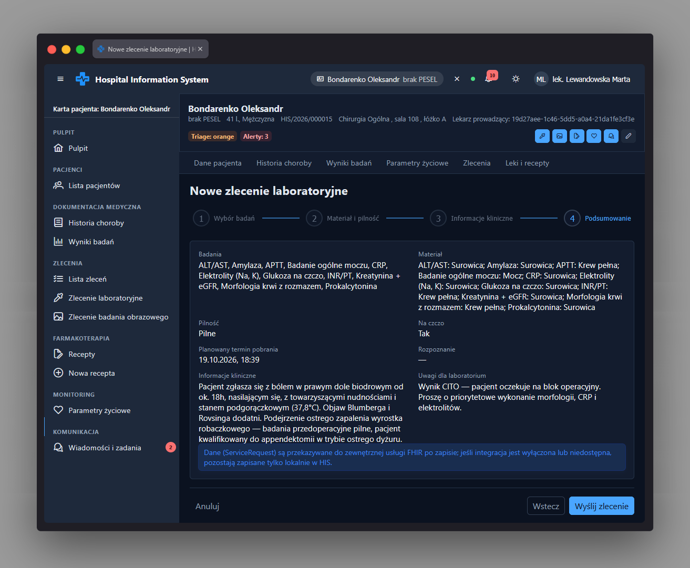

Kreator zlecenia laboratoryjnego app-lab-order-wizard-page
Ścieżka
Podstrona karty pacjenta, dostępna pod adresem
/patients/:patientId/orders/lab/new jako dziecko
powłoki karty pacjenta /patients/:patientId. Wejście
chronione jest przez
permissionGuard(PERMISSIONS.LAB_ORDER_CREATE) - rola
musi mieć uprawnienie do tworzenia zleceń laboratoryjnych.
Opuszczenie strony z niezapisanymi zmianami w formularzu jest
przechwytywane przez
canDeactivate: [unsavedChangesGuard] (potwierdzenie
wyjścia). Istnieje też górny, niekontekstowy adres
/orders/lab/new, który jest jedynie przekierowaniem
(patientScopedRedirect): jeśli w kontekście
aplikacji jest już wybrany pacjent, przekierowuje bezpośrednio na
tę stronę w jego kontekście; w przeciwnym razie prowadzi na ekran
wyboru pacjenta (/select-patient) z parametrem
umożliwiającym dokończenie przejścia po wybraniu pacjenta. Nie
jest samodzielnym widokiem.
Przeznaczenie
Czterokrokowy kreator (p-stepper, liniowy) do
złożenia nowego zlecenia badań laboratoryjnych dla pacjenta: wybór
badań z katalogu, określenie materiału i pilności, uzupełnienie
informacji klinicznych oraz podsumowanie przed wysłaniem. Po
zapisaniu zlecenie trafia do zewnętrznego systemu laboratoryjnego
(e-laboratory) jako zasób FHIR
ServiceRequest.
Dane wejściowe
-
Krok 1 - Wybór badań: zaznaczenie co najmniej
jednego badania z katalogu (
app-catalog-picker), zbudowanego z listy badań i paneli (getCatalog(),getPanels()). Pole wymagane - bez wyboru krok nie pozwala przejść dalej. -
Krok 2 - Materiał i pilność: dla każdego
wybranego badania wybór typu materiału (domyślnie
defaultSpecimenbadania, np. krew), wybór pilności (Rutynowe/Pilne/Natychmiastowe - CITO, pole wymagane), przełącznik "Na czczo" (blokowany/wymuszony, jeśli którekolwiek wybrane badanie wymaga bycia na czczo) oraz planowany termin pobrania (data i godzina, wymagane, nie wcześniej niż teraz; przy wyborze pilności Natychmiastowe (CITO) termin jest automatycznie ustawiany na "teraz"). - Krok 3 - Informacje kliniczne: opcjonalne rozpoznanie wybierane z podpowiedzi (rozpoznania pacjenta z EHR i sugestie SNOMED CT), wymagane informacje kliniczne (tekst, min. 10 znaków) oraz opcjonalne uwagi dla laboratorium.
- Krok 4 - Podsumowanie: brak nowych danych wejściowych - tylko przegląd wprowadzonych informacji i potwierdzenie wysyłki.
Akcje
-
Równolegle wczytuje katalog badań laboratoryjnych i listę paneli
(
LabOrderService.getCatalog(),getPanels()); błąd pokazuje toast i nie blokuje reszty kreatora (pusty katalog). -
Wczytuje rozpoznania pacjenta
(
EhrService.getDiagnoses()) oraz podpowiedzi SNOMED CT (getSnomedSuggestions('diagnosis')) do pola rozpoznania w kroku 3; brak rozpoznań lub niedostępność serwisu terminologicznego nie blokuje zlecenia. -
Przy zmianie zestawu wybranych badań synchronizuje formularz
materiałów - dodaje/usuwa kontrolki typu materiału dla każdego
badania (
FormRecord). - Wymusza ustawienie "Na czczo" na tak, jeśli którekolwiek wybrane badanie tego wymaga.
- Przy wyborze pilności Natychmiastowe (CITO) ustawia planowany termin pobrania na bieżący moment.
-
Blokuje przejście do następnego kroku, jeśli bieżący formularz
jest niepoprawny (
tryAdvance). -
Po kliknięciu "Wyślij zlecenie" wywołuje
LabOrderService.createOrder()z identyfikatorem pacjenta, listą badań (kod, nazwa, typ materiału), pilnością, flagą "na czczo", planowanym terminem pobrania, kodem rozpoznania, informacjami klinicznymi i uwagami. -
Po powodzeniu pokazuje toast potwierdzający (z osobnym
komunikatem dla zleceń CITO) i przechodzi do listy zleceń
pacjenta przefiltrowanej do zleceń laboratoryjnych
(
/patients/:patientId/orders?type=lab); błędy walidacji z serwera (422) nanosi na odpowiadające pola formularza, resztę zgłasza w toaście. -
Przycisk "Anuluj" na każdym kroku wraca do listy zleceń pacjenta
(
/patients/:patientId/orders) bez zapisu.
Zrzut ekranu
